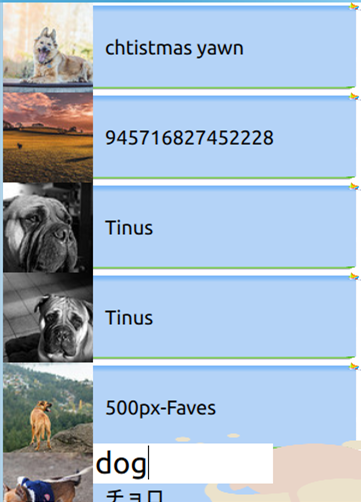

应用名称：iSearch 开发工具：Qt Creator (Qml) 应用用途：快捷搜图，爱上搜索 开发时间：2014.12
我们或许知道Flickr，它是雅虎旗下图片分享网站。一家提供免费及付费数位照片储存、分享方案之线上服务，也提供网络社群服务的平台。iSearch就是一个基于雅虎图片搜索的一个应用，它使用Qml编写，通过获取雅虎图片内容进行图片搜索，将图片展示在界面中。实现很简单，几个程序就可实现，但是界面确实很不错。
打开后，应用自动默认下载显示随机图片。
 如果想要搜索，只要在输入框输入内容，即可显示相关内容。如：输入dog，上面就会显示狗的相关图片。
想要查看哪一个图片，只需要点击图片便可查看完整图片 想要返回，点击返回即可